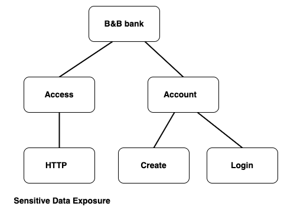
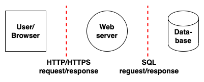

<!doctype html>
<html lang="sv">
<meta charset="utf-8" />
<title>owasp | itsec</title>

<!-- Mithril HTML Slideshow styles -->
<link href="css/mithril-slideshow.css" rel="stylesheet" />

<!-- Code formatting using highlight.js -->
<link rel="stylesheet" href="css/default.css">
<link rel="stylesheet" href="css/tomorrow.css">
<script src="js/highlight.pack.js"></script>

<!-- Text formatting using Markdown through showdown.js -->
<script src="js/showdown.min.js"></script>

<!-- labb video ons & tips om owaspfilmer. Labb inled med syfte, kort om vad vi ska göra, titta på rapporten, inled med attackträd och https, 15 min, leta sårbarheter 30 min, ta upp några och fortsätt leta -->

<!-- Here comes the slides in order -->
<script data-role="slide" data-markdown type="text/html">
# Sårbarhetsanalys
## (Vulnerabilty analysis)
### Laboration
<!-- #### Marie Grahn -->
</script>

<script data-role="slide" data-markdown type="text/html">
# Agenda

* Kort genomgång
* Sårbarhetsanalys
* Rapport
* Uppgift

</script>

<script data-role="slide" data-markdown type="text/html">
# Sårbarhetsanalys

* Vad kan gå fel?
* OWASP top 10, attacker och hur förhindra
* OWASP Code review guide
* Testning, black box, exploratory, penetration

</script>


<script data-role="slide" data-markdown type="text/html">
# Rapport

* Försättsblad med titel, ert namn och datum
* Innehållsförteckning
* Sammanfattning av innehållet i analysen (Abstract)
* Målet med analysen (Purpose)
* En beskrivning av systemet (System description)

</script>


<script data-role="slide" data-markdown type="text/html">
# Rapport

* Metodbeskrivning (Method)
* Lista med de sårbarheter ni identifierat (Vulnerabilties)
  med namn, beskrivning av sårbarheten, allvarlighetsgrad, estimerad kostnad att åtgärda (i timmar)
  och OWASP-kategori
* Överskådlig tabell (Overview of vulnerabilties)

[Mall till rapport](https://www.overleaf.com/read/jmbktjvfxvff)

</script>


<script data-role="slide" data-markdown type="text/html">
# Uppgift

* Bankapplikation (ladda hem till me-katalogen)
* Analysera dess sårbarheter
* Exempel

</script>

<script data-role="slide" data-markdown type="text/html">
# Exempel på sårbarhet HTTP/HTTPS

* Attackträd
* Data flow diagram
* Aktivitetsmatris, vilka användare kommer åt vad

</script>

<script data-role="slide" data-markdown type="text/html">
# Exempel på Attackträd



</script>

<script data-role="slide" data-markdown type="text/html">
# Exempel på Data flow diagram



</script>

<script data-role="slide" data-markdown type="text/html">
# Sammanfattning

* Analysera gärna 2 och 2
* Rapport individuellt
* Nästa lab, åtgärda sårbarheterna

</script>

<!-- include essential js-script -->
<script src="js/mithril.min.js"></script>
<script src="js/mithril-slideshow.js"></script>

</html>
